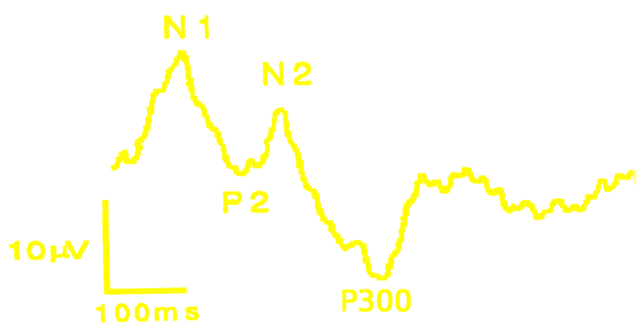
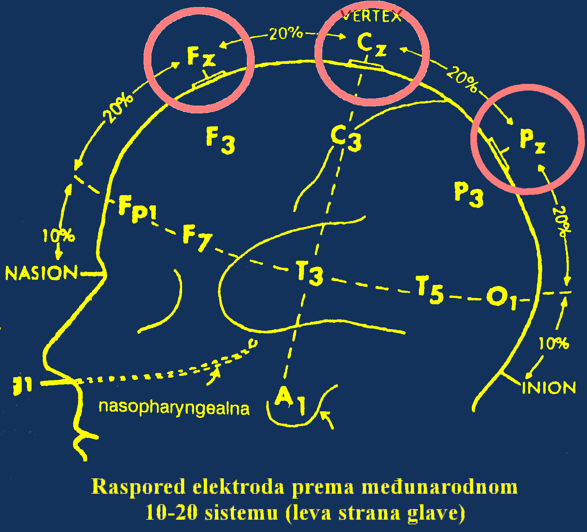
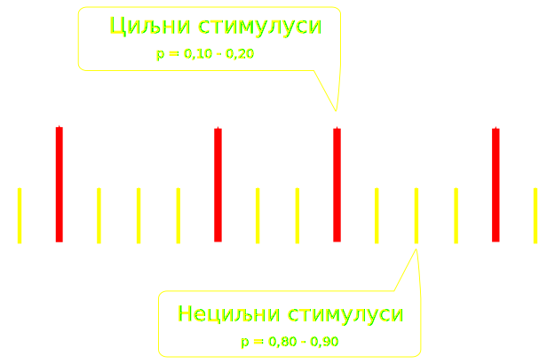
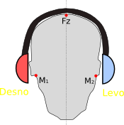
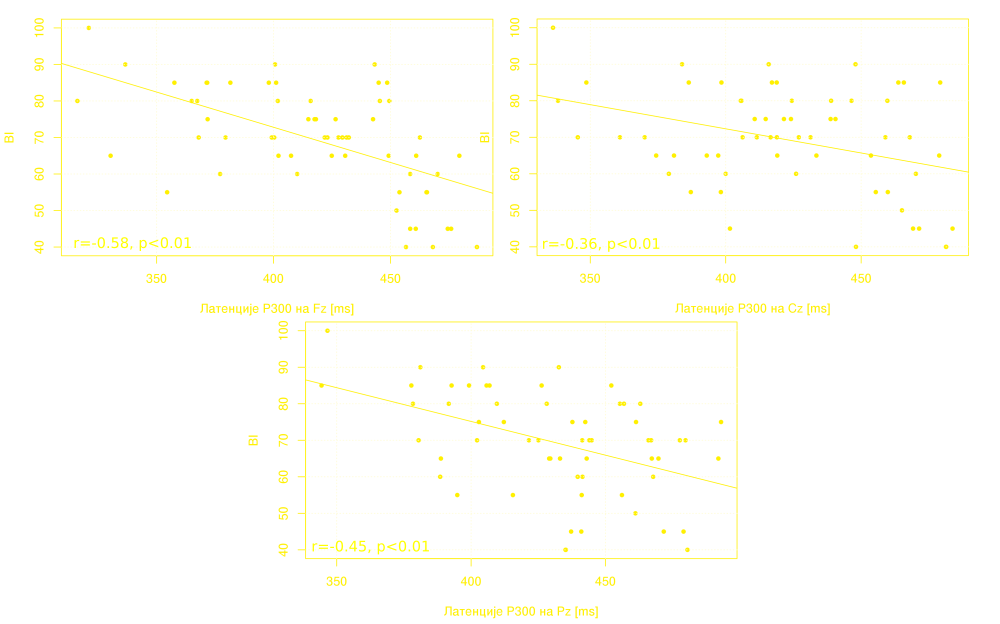

Uloga neurofizioloških markera kognitivnog deficita u praćenju oporavka nakon ishemičnog moždanog udara
Dejanović M, Stanojević Z, Milošević N, Leštarević S, Gašić S.
Banja Luka, 2024. godine
Evocirani potencijali (EP)
EP predstavljaju električnu aktivnost struktura centralnog
nervnog sistema koja je izazvana (evocirana) nekim stimulusom
ili događajem.
EP
Egzogeni
vizuelni EP
somatosenzorni EP
auditorni EP
Endogeni
kognitivni EP
Gray Walter
otkriće
prvi opisani KEP
Kognitivni potencijali - osnovni principi

morfologija
polaritet
redosled pojave
latencija
amplituda
EP dugih latencija (>110ms) izazvani kognitivnim
angažovanjem ispitanika.
Mali fazni potencijali predstavljeni serijom pozitivnih i
negativnih talasa sa širokom distribucijom na skalpu.
P300 karakteristike


P300 karakteristike
Osvežavanje radne memorije
Endogeni odgovor na zadatak koji nije izvestan
Memorija, pažnja
Latencija, amplituda *
* John
Polich, Clinical application of the P300 event-related brain
potential, Phys Med Rehabil Clin N Am . 2004;15(1):133-61.
doi: 10.1016/s1047-9651(03)00109-8.
Registracija P300
Verteks elektrode
"Oddball" paradigma
Auditivna stimulacija


KEP auditivnom stimulacijom

1000Hz, 90dB
2000Hz, 90dB

Odgovor na neciljne stimuluse
Odgovor na ciljne stimuluse
♪
Metodologija istraživanja - ispitanici
Eksperimentalna grupa - 60 bolesnika (29 muškaraca, 31 žena)
prosečne starosne dobi 58,8 ± 7,4 godina, obrazovnog nivoa od 8
do 16 godina edukacije
Kontrolna grupa - 30 zdravih ispitanika (14 muškaraca, 16
žena) prosečne starosti 57,1 ± 6,05, obrazovnog nivoa od 8
do 16 godina edukacije
Prva registracija
Druga registracija
Rezultati
Prosečne vrednosti latencija P300 u grupi ispitanika sa IMU i kontrolnoj grupi
Prosečne vrednosti amplituda P300 u grupi ispitanika sa IMU i kontrolnoj grupi
Prosečne vrednosti latencija P300 kod ispitanika u akutnoj fazi IMU i tri meseca nakon IMU
Prosečne vrednosti amplituda P300 kod ispitanika u akutnoj fazi IMU i tri meseca nakon IMU
Prosečne vrednosti latencija P300 kod ispitanika muškog i ženskog pola u akutnoj fazi IMU
Fz - p<0.01
Pz - p=0.02
Prosečne vrednosti latencija P300 kod ispitanika muškog i ženskog pola tri meseca od IMU
p > 0.05
Reakciono vreme
Prosečne vrednosti reakcionog vremena kod kontrolne grupe zdravih i ispitanika u akutnoj fazi IMU
Prosečne vrednosti reakcionog vremena u akutnoj fazi i tri meseca nakon IMU
Poređenje vrednosti reakcionog vremena između muškaraca i žena sa IMU na prvoj i drugoj registraciji
Korelacije latencija P300 na Fz, Cz i Pz elektrodi sa reakcionim vremenom u akutnoj fazi IMU

Funkcionalni status
Prosečne vrednosti BI skora u akutnoj fazi IMU
Prosečne vrednosti BI skora tri meseca nakon IMU
Korelacija latenci P300 i BI skora u akutnoj fazi IMU

Zaključci (1/2)
Mali stepen varijabilnosti P300 latencija kod zdravih
ispitanika omogućava definisanje intervala normalnosti i čini ih
veoma podesnim za procenu pojedinačnih bolesnika.
Specifičnost P300 latencije za detekciju postojanja
kognitivnih promena bila je 100%, odnosno nije zabeležena
patološka vrednost P300 ni kod jednog zdravog ispitanika. P300
latencije bile su znatno duže u grupi sa kognitivnim oštećenjem,
što može biti indikativno za prilično visoku osetljivost P300
latencije.
Kod bolesnika sa IMU registruju se značajno duže latencije
P300 potencijala u odnosu na kontrolnu grupu na svim
posmatranim arealima mozga, dok su amplitude značajno niže na
Pz arelu mozga.
Zaključci (2/2)
Vrednosti latencija P300 talasa su značajno kraće tri meseca
nakon IMU u odnosu na akutnu fazu što može biti korisno u
praćenju oporavka moždanih funkcija i proceni efikasnosti
rehabilitacije kognitivnih ostećenja.
Veći procenat produženih latencija P300 bio je povezan sa
većim stepenom intenziteta moždanog udara i prediktor je
lošijeg funkcionalnog oporavka.
P300 kao elektrofizioloski marker kognitivnog deficita nakon
IMU moze imati značajnu ulogu u otkrivanju i praćenju
kognitivnih disfunkcija.